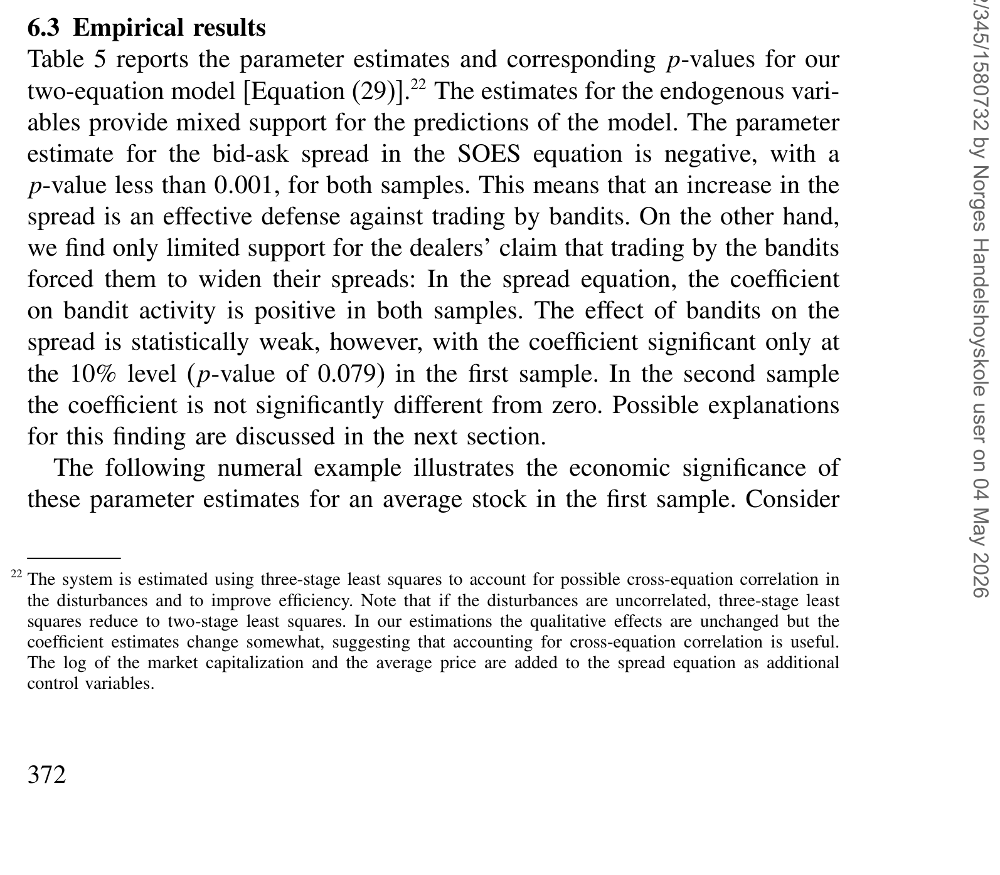
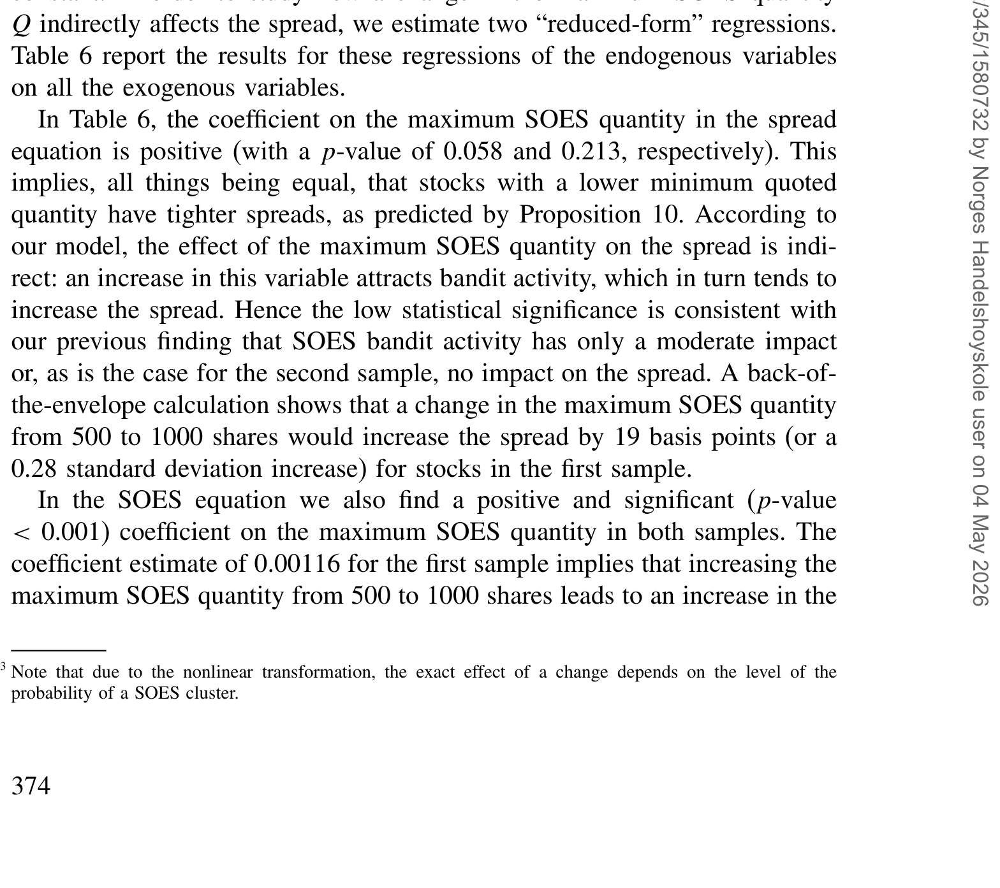
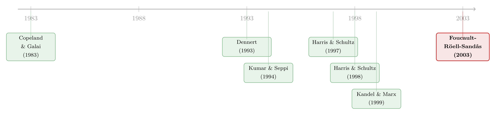

「打了就跑」的日内交易者，真的抬高了做市商的价差吗？
本文读的是 Foucault, Röell & Sandås (2003, Review of Financial Studies)：在一个把「盯盘要花钱」写进做市的模型里，作者证明所谓 SOES「强盗」（day traders）抬高买卖价差的指控并不必然成立——监控既能产生正外部性也能产生负外部性。实证上，他们用一个联立方程组拆开「价差」与「强盗活跃度」的互为因果，发现 稳健成立的只有一个方向：价差越宽，强盗越少；而「强盗越多、价差越宽」这条人人挂在嘴边的因果，只在最活跃的股票里勉强出现，且仅在 10% 水平上显著。
1 一桩华尔街的「悬案」
先讲一个让纳斯达克做市商集体抓狂的故事。
上世纪九十年代，纳斯达克有一套叫「小额订单自动成交系统」(small order execution system, SOES) 的东西。它本意是给散户用的：小单子来了，自动按做市商挂出的最优报价成交，做市商必须按 Nasdaq 规定的最小数量 Q 报「实价」(firm quote)——也就是说，你挂出来的价，别人点一下就能成交，你不能反悔。
可这套系统真正吸引来的，不是散户，而是一群被做市商恨得牙痒痒、称之为「强盗」(SOES bandits) 的职业日内交易者。1995 年 9 月，按美国审计总署的报告，这些「强盗」贡献了 SOES 成交量的 83%。他们的活法很简单：盯着信息流，一旦发现某个做市商的报价「过期」了（stale quotes，还没反映最新消息），就抢在他更新之前，按旧价跟他成交，再回头平仓赚差价。
这里就有了第一个让人想不通的地方。Harris and Schultz (1998) 研究了两家专做强盗生意的券商的数据，他们的结论近乎一句挑衅：
强盗并不比他们的交易对手——做市商——掌握更多信息，很多时候甚至更少。可强盗照样赚钱。
首先，一个最朴素的问题就是 Harris 和 Schultz 自己在文末抛出的：做市商为什么不干脆雇几个人，把别家的报价、Instinet 的报价、SelectNet 的报价都盯死，然后更及时地更新自己的价？现实里，做市商宁可砸下几十万美元买专门软件来自动更新报价，也没能根除强盗。这说明「更及时」这件事本身有成本，而且贵。
本文的出发点，正是把这个「贵」字老老实实地写进模型。
2 一个核心：盯盘是要花钱的
整篇论文反复打磨的，其实就是一个核心概念——有成本的监控 (costly monitoring)。它把做市商和强盗放在同一张桌子上：两边都得决定，自己要多用力地去盯信息。
作者把「盯盘」拆成两种：
- 新闻监控 (news monitoring)：去读公司公告、相关股票的价格变动、券商的评级升降。这件事贵，因为正确理解一则公告需要人脑的注意力。
- 报价监控 (quote monitoring)：只盯着别的做市商有没有改价。这件事便宜，因为软件就能干。
正是这一贵一贱的对比，撑起了全文的张力。做市商不会一刻不停地盯新闻——太贵了——所以他的报价总会有过期的时候。过期的报价，就是送给强盗的免费午餐。而强盗也在盯，盯新闻、也盯别人改价，就为了逮住这些机会。
接着，一个自然的问题是：既然盯新闻贵、盯报价便宜，那做市商之间会不会「搭便车」？我盯不盯新闻无所谓，反正你一改价，我软件一响，立刻跟上。这就引出了本文第一个、也是最漂亮的结果——监控的外部性。
3 监控的两副面孔：正外部性与负外部性
考虑做市商 i，他有两种被「打劫」(picked off) 的方式。
第一种：某个强盗先于所有人反应过来。第二种：另一个做市商 j 先看到消息、改了价，而某个强盗盯着 j 的改价、抢在 i 反应之前来跟 i 成交。
这两种方式，恰好对应监控的两副面孔：
- 正外部性：我可以靠盯别人的报价来「免费」享用同行盯新闻的努力。你盯得越勤，我被强盗逮住的概率越低。
- 负外部性：但强盗也能从「别人在改价」这件事里，反推出「还有些做市商的报价没改」。同行一动，等于替强盗点亮了一盏「这里有过期报价」的灯。
哪一面更强，取决于做市商对别人改价的反应有多快——模型里用一个参数 φ 来刻画：当一个做市商先改价时，强盗抢在其余做市商之前反应的概率。φ=0 表示做市商永远比强盗快，φ=1 则反过来。
然后，这两种外部性会一路传导到做市商的报价行为上：正外部性诱使做市商去匹配最优报价而非抢先压价（于是出现多重均衡，做市商赚正的期望利润）；负外部性则催生一个流动性极低的均衡——只有一个做市商挂出内部价差、且赚零利润。
这就是为什么作者敢说：强盗抬高价差，这件事在理论上并不必然。
4 模型：把「过期报价」从均衡里长出来
这是一篇有完整理论模型的论文，值得把骨架一步步搭清楚。
设定。 一只风险资产，清算价值 V，期初期望值 v_0。三类交易者：M ≥ 2 个做市商、N ≥ 1 个强盗、若干流动性交易者，全体风险中性。一个交易回合分三个阶段（见原文 Figure 1）：
- 报价阶段：做市商同时报出各自的价差
S_i，买价b_i = v_0 − S_i/2，卖价a_i = v_0 + S_i/2。记内部价差（最小的价差）为S_b，挂出内部价差的做市商数目为M_b。 - 监控阶段：看到报价后，做市商和强盗各自选择监控强度
λ_i、γ_j。 - 交易阶段：以概率
α出现价值创新，新值为v_0 ± σ，各半；否则（概率1−α）以概率β来一个流动性买/卖单。
第一步：谁先看到新闻。 这是模型的引擎。若新信息到来，交易者 m 第一个看到的概率，与他自己的监控强度成正比、与总监控强度成反比。对做市商 i：
$$ \Pr(f=i)\equiv P(\lambda_i)\equiv \frac{\lambda_i}{\lambda_i+\sum_{m\neq i}\lambda_m+\sum_{j}\gamma_j} $$
对强盗 j 对称地：
$$ \Pr(f=j)\equiv P(\gamma_j)\equiv \frac{\gamma_j}{\gamma_j+\sum_{k\neq j}\gamma_k+\sum_{i}\lambda_i} $$
把最核心的这一式拆开看——它就是整篇文章的「发动机」：
直觉：这是一个标准的「抽签」结构（Tullock 式的竞赛函数）。P(0)=0（完全不盯就永远看不到），P(+∞)=1（持续盯就一定第一个看到）。关键在于——分母里把强盗的监控 γ 和同行的监控 λ 放在了一起，这就是外部性的来源：别人多投一分力，你的命中率就被摊薄一分。
第二步：盯盘的成本。 监控的代价用一个严格递增、严格凸的成本函数刻画：
$$ \psi(l)=\frac{c\,l^2}{4} $$
其中 l 是监控强度，c > 0 决定成本的量级。凸性意味着「盯得越紧，边际成本越高」——这正是做市商不可能持续盯新闻的根本原因。
第三步：被打劫的概率。 令 λ_A ≡ Σλ_i、γ_A ≡ Σγ_j 为总监控量。强盗第一个反应（做市商 i 直接被强盗逮住）的概率是
$$ \Pr(f\in N)=\frac{\gamma_A}{\lambda_A+\gamma_A} $$
而「别的做市商先看到消息」的概率是
$$ \Pr(f\in D_b\setminus i)=\frac{\sum_{m\neq i}\lambda_m}{\lambda_A+\gamma_A} $$
第二种被打劫，发生在「别的做市商先改价、强盗再借这个改价来逮 i」，其概率是 φ·Pr(f∈D_b\i)。把 φ 调高，负外部性就压过正外部性——同行的勤奋反而害了你。
第四步：强盗能吃多大一口。 NASD 规则限制单个强盗在五分钟内对同一只股票只能开一个仓 (L=1)，且下单总量不能超过总挂单深度 M_b·Q。于是一笔强盗交易的规模是
$$ Q_s(M_b)=\min(M_b,\,L)\,Q=\min\!\Big(1,\tfrac{L}{M_b}\Big)\times M_b Q $$
作者把暴露给强盗的那部分深度比例 xs(M_b)=min(1, L/M_b) 称为做市商在强盗交易中的「参与率」。L 这个监管旋钮很关键——它和流动性交易规模 η 不是一回事：强盗的单量取决于总挂单深度，而流动性单量不取决于此。所以减少内部价位上的做市商数目，会必然抬高做市商在流动性交易中的参与率，却可能不改变他在强盗交易中的参与率（只要 L 足够大）。
把这四步合起来，模型就在均衡里「长」出了 Harris-Schultz 那个谜题的答案：做市商对强盗是净亏的，但他靠跟流动性交易者做生意把这块亏损补回来；强盗的期望利润为正，恰恰因为报价是实价、成交是自动的——这给了强盗一份免费的「交易期权」(free-trading option)。这一点呼应了 Copeland and Galai (1983) 对固定报价之「自由期权」性质的经典分析，只不过本文让这份期权在有成本监控的均衡里内生地浮现出来。
第三个结果顺理成章：既然强盗的利润命脉是「实价 + 自动成交」，那么放松实价规则（比如允许做市商对自己的报价「往后撤」(back away)）就会改变一切。但效果方向不定——可能收窄也可能扩大价差、可能加快也可能拖慢价格发现，全看落在了哪个均衡上。
5 识别策略：一团互为因果的乱麻
讲完模型，但真正关键的一步在于回答那个政策问题：强盗到底有没有抬高价差？
这件事在数据上极难。作者说得很坦白：价差和强盗活跃度是互相决定的。价差一宽，一部分强盗无利可图就撤了（价差宽 → 强盗少）；可强盗一多，做市商怕被逮，又会把价差拉宽（强盗多 → 价差宽）。两个箭头方向相反、纠缠在一起，单方程回归只会得到一团说不清的相关。
于是作者上了一个联立方程组（两方程模型）：一个方程解释强盗活跃度，一个方程解释买卖价差，让二者互为内生变量，再用工具变量把这团乱麻拆开。模型里那些比较静态结论（比如强制挂单深度 Q 下降 → 强盗活动减少、价差收窄）正好提供了排除性约束的来源。
作者先看了变量间的相关结构（如原文表 4 所示，给出各变量的相关系数矩阵），确认价差与强盗活跃度之间的简单相关并不能直接读作因果，这正是要上联立方程的理由。
6 数据与主要结果
样本来自纳斯达克，作者分两组股票做估计：一组是交易最活跃的股票，一组是交易较不活跃的股票——这个切分本身就是结果的关键。
联立方程的参数估计与对应的 p 值汇总在表 5（如表 5 所示）：

Table 5: reports the parameter estimates and corresponding p-values for our
把两个方向分开看：
方向一（稳健）：价差越宽 → 强盗越少。 这个结果在两组样本里都成立，与模型预测完全一致。价差是强盗的成本，成本一高，他们就退场。这条因果链条干净、稳定。
方向二（脆弱）：强盗越多 → 价差越宽。 这正是政策辩论里被反复引用、被 Joseph Hardiman 和无数做市商挂在嘴边的那条因果。可数据对它的支持弱得多——
- 只有在最活跃的那组股票里，更高的强盗活跃度才与更宽的价差相关，而且只在
10%水平上显著； - 在较不活跃的那组股票里，作者无法拒绝「强盗活动对买卖价差没有影响」这个原假设。
换句话说，反转出现了：人人坚信的那条「强盗推高价差」的因果，在数据里几乎站不住脚；真正稳健的，反倒是它的逆命题——价差自己在筛选强盗。
表 6 进一步报告了内生变量的（简化式）回归结果，用以检验模型关于强制挂单深度等比较静态的预测（如表 6 所示）：

Table 6: report the results for these regressions of the endogenous variables
这里作者验证了模型的另一个角落：Harris and Schultz (1997) 记录到，1994 年 1 月最小挂单深度从 1000 股降到 500 股后，强盗活动减少了。本文模型恰好预测：强制深度下降 → 强盗活动减少、价差收窄。实证上，作者发现强制深度与强盗活跃度的关系证据很强，但强制深度与价差的关系只得到弱支持——又一次，「量」这一侧清楚，「价」这一侧含糊。
7 文献脉络
把这条线索捋一捋，会发现本文站在三股力量的交汇处。
最上游是固定报价的「期权性质」。Copeland and Galai (1983) 早就指出，一个挂出实价的做市商，等于免费送给市场一份「自由交易期权」——这正是本文「过期报价 = 强盗的免费午餐」的理论祖先。与此并行的，是做市商之间价格竞争的研究，如 Dennert (1993) 对做市商价格竞争的分析。
中游是与 SOES 强盗直接相关的两支文献。一支是 Harris and Schultz 的两篇实证（1997、1998），前者抓住 1994 年 SOES 规则变动做了一次准自然实验，后者算清了强盗的交易利润并抛出了那个核心谜题；另一支是 Battalio, Hatch, and Jennings (1997)，他们发现强盗加快了价格发现、且更可能在波动期交易——本文的理论与实证都与之一致。
与本文最近的对手是 Kandel and Marx (1999)：他们问的是「躲避奇数八分之一报价」是不是做市商对付强盗的理性反应，但在他们模型里，强盗的盈利机会是被隐含假设为做市商监控不完美的产物。本文的贡献，恰恰是把这个「隐含假设」显式化——显式地建模过期报价/盈利机会是如何在均衡中产生的。此外，Kumar and Seppi (1994) 研究指数套利者如何从报价更新中学习信息，但他们假设套利者总是比做市商更快看到报价，这与本文中强盗相对做市商的设定不同。

关于「做市商被知情交易者『逆向选择』如何抬高价差」这条更宏大的主线，本博客另有几篇可参照：把价差里的逆向选择成分单独拆出来，可见《价差是真的，成本却是假的——逆向选择究竟从哪里抬高了「要求回报」》；把做市商的「风险限额」如何系住报价讲清楚的，可见《无风险市场里的风险厌恶：是谁给做市商系上了「风险限额」这根绳》；而非法内幕交易者进场时做市商收起的「不是价差，而是深度」，则呼应了本文「量比价更敏感」的发现，见《内幕交易者进场那一刻，做市商收起的不是价差，而是「深度」》。
评论与延伸（Q&A + 研究方向）
(a) 几个可能的疑问
Q：强盗明明信息不比做市商多，凭什么稳赚？这不违反直觉吗？
不违反。强盗赚的不是「信息优势」，而是「速度 + 制度」的租金。实价规则 + 自动成交让做市商的过期报价成了一份免费期权，强盗只要比某些做市商快一步，就能行权。而做市商之所以慢，是因为持续盯新闻的成本是凸的——这不是愚蠢，是最优。
Q：既然监控有正外部性（能搭便车），为什么做市商不干脆全都不盯新闻、只盯报价？
因为如果所有人都只盯报价、没人盯新闻，那就没有「第一个改价的人」可供搭便车了——系统里没有新信息进入价格，强盗反而能畅通无阻。均衡里必须有人去盯新闻，正外部性才有依附的对象。这是个典型的公共品供给问题。
Q：本文最稳健的结果是「价差宽 → 强盗少」，可这难道不是废话吗？成本高了人就走，谁不知道。
表面上像废话，但它的价值在于证伪了反方向。政策辩论的全部火力都压在「强盗 → 宽价差」上（要不要废掉 SOES），而数据说这条几乎不成立。把两个方向用联立方程分开、并指出舆论盯错了箭头，这才是贡献。废话的反面，往往是被忽略的真相。
Q：为什么「强盗 → 宽价差」只在最活跃的股票里、还只在 10% 水平上出现？
一个解读：活跃股票上强盗密度高、做市商被逮的频率高，价差对强盗的防御性反应才显著到能被统计捕捉；不活跃股票上信号太弱，淹没在噪声里。但 10% 的显著性本身就提醒我们——即便在最有利的样本里，这条因果也很勉强。
Q：联立方程的识别靠什么？工具变量可信吗？
这是全文最该被追问的地方。识别依赖模型的比较静态（如强制挂单深度
Q、L等监管参数对两个内生变量的差异化影响）来构造排除性约束。可信度取决于这些工具是否真的只通过一个方程影响系统——比如「强制深度只影响强盗的可吃单量、不直接进入价差方程」这个排除限制，是可以质疑的。
Q：放松实价规则到底是好是坏？模型给了明确答案吗？
没有，而这正是诚实之处。模型说效果取决于落在哪个均衡：正外部性主导的多重均衡里，放松实价可能收窄价差；负外部性主导的低流动性均衡里则可能相反。理论拒绝给政策一个一刀切的答案——这本身就是对「废掉 SOES 就能改善市场」这种简单论断的有力反驳。
(b) 几个可能的研究问题与提案
1. 把「有成本监控」搬到公司债的交易商市场。 - 【经济故事】公司债是典型的交易商 (OTC) 市场，报价更新慢、信息更分散，「过期报价」问题理论上更严重。本文的监控外部性框架几乎可以原样移植：哪些交易商在「盯新闻」、哪些在「搭便车盯同行报价」？ - 【可行性】中。需要 TRACE 逐笔成交 + 交易商身份（如 enhanced TRACE 或监管版本）。识别难点在于报价不像纳斯达克那样集中可见，「谁先改价」难以观测；但可用成交价对公开消息的反应时滞做代理。
2. 算法/软件普及如何重塑监控外部性。
- 【经济故事】模型里 φ（强盗相对做市商的报价监控优势）和监控成本 c 都是外生的。过去二十年，自动报价软件的普及把 c 推向极低、把 φ 不断改写。一个自然的实验：当报价监控几乎免费时，正外部性（搭便车）是否压倒一切，导致做市商集体放弃盯新闻？
- 【可行性】中高。可利用纳斯达克从 SOES 到 SuperSOES 的制度变迁做断点/事件研究，比较自动化前后价差与价格发现速度的变化。
3. 外资持有人作为「慢更新」的一方。 - 【经济故事】把做市商换成对本地新闻反应更慢的外资交易者，强盗换成本地知情交易者——本文框架就变成了「外资是否系统性地被本地速度优势者逆向选择」的模型。 - 【可行性】中。需要带交易者国籍标签的逐笔数据（如韩国 KRX，本博客已有数篇相关研究可借力）。识别可借「可投资度」变动做外生冲击。
4. 「量比价更敏感」是否是微观结构的普遍规律？ - 【经济故事】本文反复出现一个不对称：监管/活跃度对强盗活动量的影响清晰，对价差的影响含糊。这是否是更一般的现象——流动性的「数量维度」比「价格维度」对冲击更敏感？ - 【可行性】高。可在多个市场、多类冲击（tick size 改革、深度规则变动）上系统检验「深度反应 vs 价差反应」的相对显著性，纯实证、数据可得。
我的判断
本文最大的贡献，是把一场吵了很多年、火药味十足的政策辩论，从「站队」拉回到「机制」。它做了两件难而正确的事：一是把「过期报价为什么存在」从一个隐含假设变成了均衡的内生产物（相对 Kandel-Marx 的推进很实在）；二是用联立方程诚实地承认价差与强盗活跃度互为因果，并据此指出——舆论一直盯错了箭头。监控的正负外部性这个二分法，简洁而有解释力。
对识别，我有两点保留。其一，联立方程的工具变量依赖模型比较静态，而这些排除限制（如强制深度只进强盗方程、不直接进价差方程）是可以被质疑的，作者也确实只得到「弱支持」。其二，全文的实证结论高度依赖「活跃 vs 不活跃」的样本切分，而切分阈值本身可能与价差、与强盗偏好内生相关——10% 的边缘显著性更让人不敢把「强盗推高价差」当成定论，哪怕是在最有利的样本里。
后续我最想看到的，是把这个框架放进报价完全可观测、交易者身份可识别的现代数据里重做一遍：当报价监控的边际成本趋近于零、φ 被算法彻底改写之后，那两种外部性的天平到底倒向哪一边？这不只是给一个旧争论收尾，更是理解今天高频做市生态的一把钥匙。
参考文献
- Battalio, R., B. Hatch, and R. Jennings (1997). SOES Trading and Market Volatility. Journal of Financial and Quantitative Analysis 32, 225–238.
- Copeland, T., and D. Galai (1983). Information Effects on the Bid-Ask Spread. Journal of Finance 38, 1457–1469.
- Dennert, J. (1993). Price Competition Between Market Makers. Review of Economic Studies 60, 735–751.
- Foucault, T., A. Röell, and P. Sandås (2003). Market Making with Costly Monitoring: An Analysis of the SOES Controversy. Review of Financial Studies 16(2), 345–384.
- Harris, J., and P. Schultz (1997). The Importance of Firm Quotes and Rapid Executions: Evidence from the January 1994 SOES Rules Change. Journal of Financial Economics 45, 135–166.
- Harris, J., and P. Schultz (1998). The Trading Profits of SOES Bandits. Journal of Financial Economics 50, 39–62.
- Kandel, E., and L. Marx (1999). Odd-Eighth Avoidance as a Defense Against SOES Bandits. Journal of Financial Economics 51, 85–102.
- Kumar, P., and D. Seppi (1994). Information and Index Arbitrage. Journal of Business 67, 481–509.